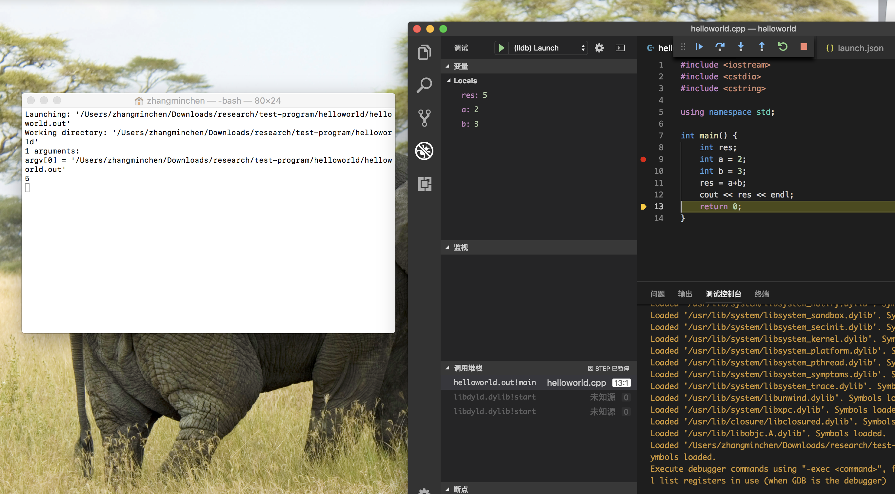

在macOS环境下写c/c++， 如果是大型项目的话，可以考虑用IDE比如xcode等等
但是如果仅仅是写一些小型的模块，或者说是研究一些算法，刷leetcode等等，用vscode就足够方便了。
测试程序Hello world
1
2
3
4
5
6
7
8
9
10
11
12
|
using namespace std;
int main()
{
int result;
int a = 2;
int b = 3;
result = a + b;
cout << result<< endl;
return 0;
}
|
写配置文件
tasks.json
用快捷键shift+command+p
打开Tasks: Configure Tasks
选择Create tasks.json file from templates
此时会蹦出一个下拉列表，在下拉列表中选择Others
自动生成一个task.json文件
配置如下：
1
2
3
4
5
6
7
8
9
10
11
12
13
14
15
16
17
18
19
20
21
22
| {
// See https://go.microsoft.com/fwlink/?LinkId=733558
// for the documentation about the tasks.json format
"version": "2.0.0",
"tasks": [
{
"label": "helloworld",
"type": "shell",
"command": "g++",
"args": [
"${file}",
"-o",
"${fileDirname}/${fileBasenameNoExtension}.out",
"-g"
],
"group": {
"kind": "build",
"isDefault": true
}
}
]
}
|
launch.json
找到虫子的图标，如下图所示

简单修改之后，配置launch.json如下
1
2
3
4
5
6
7
8
9
10
11
12
13
14
15
16
17
18
19
20
21
| {
// 使用 IntelliSense 了解相关属性。
// 悬停以查看现有属性的描述。
// 欲了解更多信息，请访问: https://go.microsoft.com/fwlink/?linkid=830387
"version": "0.2.0",
"configurations": [
{
"name": "(lldb) Launch",
"type": "cppdbg",
"request": "launch",
"program": "${fileDirname}/${fileBasenameNoExtension}.out",
"args": [],
"stopAtEntry": false,
"cwd": "${workspaceFolder}",
"environment": [],
"externalConsole": true,
"MIMode": "lldb"
}
]
}
|
设置断点，F5调试
切换到helloworld.cpp
快捷键command+shift+b对源文件进行编译
编译成功后，F5调试
调试成功的图案如下：

 微信
微信 支付宝
支付宝